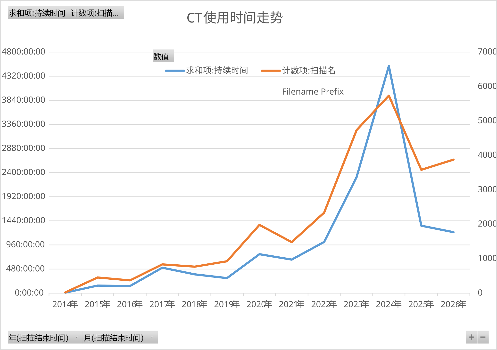

个人介绍是我个人的主观意见，仅供参考。
我科买 CT 时调研过的厂家，方便其他想买 CT 的同僚查看。方向是骨科/生工科研，不包括宠物那种 CT。没有收任何广告费，但是肯定会存在个人的喜好倾向。
活体构型指像人类医疗 CT 一样，动物固定在槽里，光源和相机在外侧旋转。离体构型指光源和相机固定不动，样品在中间旋转。
因为目前 微焦X射线光源 和 闪烁体X光相机（含CCD/CMOS两种） 国产化比较差，都还是进口，所以各厂家相同生态位设备的空间分辨率都差不多。比拼的是上层的硬件组装设计、功能开发和软件设计。
国产目前的软件优势是接入了 AI 快速识别绘制 ROI 功能，但是我还没体验过，可能只是厂家吹嘘厉害。布鲁克的 CTAn 的固定程序算法还是比较保险的，我们因为已经有了一套布鲁克的软件，所以国产软件分析能力对于我们并不是非常重要。
除了3个国外传统牌子是通过产品了解的，我主要是通过搜索引擎搜索国产CT网站，因此并不能包含所有企业。
网站做的很差的，了解不到信息，直接略过；有的核心主营是工业CT，或者生命科学只是附带可以扫离体样本而没有真实应用，我买来用就会遇到很多厂家没考虑到的问题，所以也略过。
目前是按我知道他们品牌的先后顺序排序。
| 品牌 | 属地 | 个人介绍 | 换样器 | 网站 | |||||||||||||||
|---|---|---|---|---|---|---|---|---|---|---|---|---|---|---|---|---|---|---|---|
| 进口 CT | |||||||||||||||||||
| 布鲁克(Bruker) | 美国/比利时 |
我科、隔壁大学、重医生科院都有买过。布鲁克的核磁做得很好，2012 年收购 SkyScan 丰富自己的 CT 产品。 目前型号里，离体构型最好的是 X4 POSEIDON，标称空间分辨率 ＜2μm，我科买的 SkyScan 1272 已经下市了，标称空间分辨率 ＜4μm；活体构型目前最好的是 SkyScan 1276，标称空间分辨率 ＜6μm。做高通量的话换样器很有用，1272、1275、X4 POSEIDON，有换样器。 X4 官方有做极限分辨率的展示图，能清晰的看到骨微小管、骨陷窝，我自己用 1272 扫了一下，只能勉强辨认，不够分析，这就是空间分辨率的性能差异了。所以后续各种机型在清晰度上可以参考他们的空间分辨率指标。 小鼠股骨极限扫描对比图象
他们同时有核磁部门和材料部门两个平行部门负责售卖，不互通不方便用户交流。活体构型的 1276 就是单纯核磁部门在卖，1272 等离体构型则是核磁部门和材料部门都卖。 因为集团在美国，所以国内还是可能受贸易制裁禁运。 |
✅ | 原厂 | |||||||||||||||
| SCANCO | 瑞士 |
大坪医院和重医口腔医院都有买过。 目前型号里，离体构型的 µCT 100 看起来最好，有换样器；活体构型的 vivaCT 80 参数上空间分辨率有点低。跟厂家联系后告诉我，他们是标的扫活体动物的空间分辨率，其他厂商都是用很小的离体样本扫的分辨率。此话确实为真，但是 vivaCT 80 扫离体小样本的能力如何无法评估。 数据可以导出dicom，之前我们机器坏了，学生去大坪扫了拿到我这里用SkyScan的软件分析。看到各种论文里用的挺多的，3D图片以表面渲染为主，但是具体的软件我没见过。 国内代理通过其他同事转给我彩页和参数，虽然参数还行，但是彩页做的不好看。后来领导想买活体构型的，就没有继续交流了。 我看到他们的彩页上说支持有限元分析：软件与设备整合一体，模拟真实力学测试，以非破坏性方式分析样品的生物力学特性，一次性获得多次力学测试才能得到的结果。如果这个功能内置了的话，就不需要去专门搜索研究怎么做了，会方便很多。 |
✅ | 原厂 国内指定代理 |
|||||||||||||||
| 瑞孚迪(revvity) | 美国 |
原美国PE，珀金埃尔默(PerkinElmer)2023年拆分出来的。我院临床医学中心、隔壁大学有买过。 目前只有一款活体构型 Quantum GX3，纸面参数感觉还行。 在隔壁大学见识过，但是他们是十几年前的型号，官方软件是一体化设计，数据为专有格式，可以导出dicom。3D以表面渲染为主，可以鼠标直接选择区域，分析大块脂肪时用的多。 通过大学实验员加工程师微信没通过，通过官网找到销售，结果销售不理我，问不到什么内容。 |
❌ | 原厂 | |||||||||||||||
| 国产 CT | |||||||||||||||||||
| 三英 | 天津 |
几年前在 B 站搜 CT 视频教程看过他们的教学视频，我觉得讲的很好就收藏了，但是当时他们还是主要做离体构型的工业 CT，现在也卖小动物 CT 了。 目前型号里离体型应该是 nanoVoxel-1000 大小合适，标称分辨率大约是 1272，但是没有样品台垂直移动，所以扫描便利性上不如 1272；活体型是 Pixon-2000。 国产工业CT公司，硬件上面很多东西都能定制，据销售说已经生产换样器，给我看了一个实物图但暂时没有公开的展示图，还是属于按需定制的附属物，不是布鲁克那种可以随时拆装的成品配件。 nanoVoxel-2000 以上支持增配物镜耦合探测器，空间分辨率能达到0.5μm，已经是 SkyScan 2214 的水平了，但是我没做过相关级别的图像，所以无法评估；但是用这个扫的小鼠股骨可以轻松达到布鲁克 X4 POSEIDON 的展示图级别。 早期和国外 DrangonFly 软件合作，现在也有了自己的分析软件，具体的使用和软件还没了解过。 我觉得他们是国产 CT 里目前网站展示做的最好的，比较清晰美观。 |
✅ 定制 |
原厂 | |||||||||||||||
| 平生 | 江苏昆山 |
科里准备采购新 CT 时，当时是美国禁运最厉害的时候，所以就自己搜了一下国产 CT。我考虑到我科做离体样本最多，所以当时主要是在找离体构型的小动物 CT，平生的产品里面有小动物离体 CT。从网站上就感觉平生是这种专注于小动物的 CT 系列，似乎是国产里面最成熟的之一。 目前的型号里，离体型 VENUS；活体型 NEMO。离体型 VENUS 1代空间分辨率，和SkyScan 1272差不多，学生出去扫过，画质确实足够，但是像素分辨率给的很奇怪，不方便用 SkyScan 的软件分析；2 代彩页宣称分辨率达到 X4 POSEIDON 级别，但目前没有相应的极限展示图可以看。目前他们还没精力开发换样器。活体型 NEMO 3代空间分辨率仍然和 1276 差不多。 软件方面我跟他们视频会议看了一下，满足基本的需求，但授权上稍微有些封闭，一机一码，不像 SkyScan 可以多台电脑安装。给他们提供了一些可以改进的建议，国产的软件改起来还是比较快。 他们型号名字读不懂，又不标具体第几代，这点我不习惯。 |
❌ | 原厂 | |||||||||||||||
| 锐视 | 安徽合肥 |
目前没有单纯的活体构型设计设备，离活一体对应的旗舰型号是 IMAGING 100pro，适合主做离体，偶尔兼顾一下活体的需求。厂家宣称的扫描速度特别快，所以不需要设计换样器。 第一次是同事转给我的，发给我的彩页一看，空间分辨率参数莫名的高，和离体型的 SkyScan 1272 差不多，而且机箱设计也像个普通机柜，就直接产生怀疑而没有进一步了解。后来他们安排了现场讲解，我才通过视频看出来他们是用离体构型让动物旋转来扫活体，难怪空间分辨率这么高。还是有麻醉的，不然就是单纯的离体设备了。这个活体设计我目前看到的还是独一份，比较有特色。但是别人都没有采取这种活体设计，不确定是不是也有缺点，毕竟动物在旋转。 展示时有一个空间分辨率很高的断层图，扫描+重构速度还很快，我被惊艳到了，想了解大概原理但是因为涉及商业机密被拒绝了，我猜是光源功率大+平板探测器面积大。我也只是通过现场宣讲得到的信息，可能是被厂家美化过的。 具体的软件还没了解过，但是厂家说的授权比较宽松，没有限制电脑数量。 由于他们网站做的很差，我调研时根本没有注意到这个牌子，是后来他们了解到我们在买后主动推销的。 |
❌ | 原厂 | |||||||||||||||
| 奥影 | 上海 |
是厂家主动联系我的，类似三英，也是工业CT厂家进入生命科学领域。很工程师思维，销售给我讲的都是各种参数，彩页和官网的各种参数都给非常详细，看起来不错。 目前型号里离体型，桌面型的 AX-1000CT大小合适，标称和SkyScan 1272差不多，也可以加钱进一步提升空间分辨率；活体型是 Pixon-2000，参数看起来和 1276 差不多。 立柜式的 AX-2000CT 体积有些大了，和三英一样可以定制换样器，但我暂时没有见过展示图。 官网页面写的使用的 InstaRecon® 分层重建算法，这个布鲁克前几年也用过，但是后来合作终止了，布鲁克换成了自己的 NRecon 2.0 软件。 官网页面数据详细程度比三英都更高。 |
✅ 定制 |
原厂 | |||||||||||||||
目前所有的自动换样器都是给离体构型设计的，也就是主要做工业流水线样本的。
我科 2014 年和 SkyScan 1272 一起买的换样器，初期实验量不多，加上第一款换样器在设计上有一些缺点，所以前几年没使用。2022 年科里研究生变多了，大家为了自己的论文水平，做的试验样品也比较多，一下子就有了很多扫描需求。人工扫描很短的时间就要换一次样，人需要一直守在这里，就会占用很多时间。于是我重新开始启用换样器（通过一些变通方法来规避缺点）。为此我还研究了怎么低成本批量打标签：用普通打印机打印平板标签纸教学录像

所以从我自己统计的使用量趋势可以看到，2023、2024年，使用量直接爆表，2024 年扫描净时间都有4500+小时，每次换样间隔时间都至少 5 分钟，还有额外的备样、调试用时，所以全年 CT 工作量肯定是超过 5000 小时的（一年 365 天只有 8760 个小时）。当时设备的相机还是 CCD，这也导致了很快把设备寿命干废了，第二年设备就因为坏了半年没有使用，趋势就掉下来了。我们是生命科学，扫的都是不同小鼠的离体骨头，都可以做出这个使用量，更不用说工厂的流水线了。使用者也需要注意维护保养，好好开空调、除湿机，另外买能够覆盖硬件损坏的维保。
布鲁克的外置换样器目前可能是有专利，其他厂家做的都是舱内设计。这些桌面 CT 都是自屏蔽的，所以 CT 工作时人可以待在旁边，所以如果是外置换样器，必须结合电控开关门设计，内置的只需要做在舱内就行了。
外置的优势是，除了换样过程中，其他任何时间都可以上样，只要转盘上有样本，就可以无限工作下去。比如你放了 16 个样本，晚上 10 点你要赶车之前来查看，已经扫了 8 个，现在第 9 个扫了一半，你不用停止 CT，只需要把转盘上扫完的 8 个换成新的，就可以走了，第二天来转盘上是 16 个扫完的样本。而舱内设计需要停止当前扫描（不然有辐射），打开舱门，更换扫完的样本后，重新开始扫描。
布鲁克的外置式设计目前看起来最好用，国产的虽然因为专利限制无法做成舱外，但便宜很多。
更新于2026年7月2日